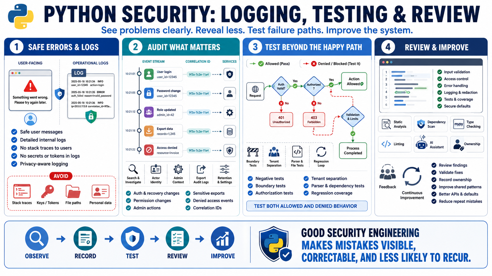

Logging, Error Handling, Testing, and Review Mistakes
Connecting to LMS... Progress: in progress

Narration
Logging and error handling shape what teams can see and what users can learn. A common mistake is exposing stack traces, internal paths, query details, tokens, secrets, or sensitive personal data in user-facing errors or broadly accessible logs. Another mistake is hiding errors so completely that security-relevant events disappear. Good systems separate safe user messages from detailed operational logs, and they design logs with privacy and investigation in mind.
Audit events should capture meaningful security activity: authentication changes, account recovery, permission changes, administrative actions, sensitive exports, denied authorization decisions, unusual service behavior, and configuration changes. Correlation IDs and consistent event structure help teams connect events across services. Logs should support troubleshooting and detection without becoming a second database of sensitive material.
Testing mistakes often come from only testing the happy path. Python applications need negative tests, boundary tests, authorization tests, tenant separation tests, parser tests, dependency update tests, and regression tests for previously fixed issues. A validation fix should be tested with invalid, unexpected, unauthorized, and edge-case input. A permission fix should test both allowed and denied users. Security quality improves when failure modes are made visible and repeatable.
Review is the glue between code, tests, tools, and operations. Static analysis, dependency scans, type checking, linters, and AI assistance can help, but ignored results do not reduce risk. Teams should review findings, validate fixes, record ownership, and improve shared patterns. The goal is to make mistakes correctable and less likely to recur through better APIs, better defaults, better examples, and better engineering habits.